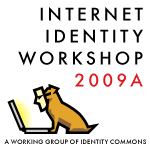

Drummond Reed's blog
Acxiom Announces Beta Program for Online Identity Card
 Information Card Foundation member Acxiom® Corporation (NASDAQ: ACXM), a global leader in interactive marketing and risk mitigation services, announced a beta program for the Acxiom Identity Card. This program uses Information Card technology to enable retail merchants, corporations, financial institutions and other organizations to offer a privately branded identity card to their customers.
Information Card Foundation member Acxiom® Corporation (NASDAQ: ACXM), a global leader in interactive marketing and risk mitigation services, announced a beta program for the Acxiom Identity Card. This program uses Information Card technology to enable retail merchants, corporations, financial institutions and other organizations to offer a privately branded identity card to their customers.
"Businesses should benefit with a decrease in internal consumer authentication and fraud detection costs if they encourage their customers to adopt a digital identity card," says Tim Christin, senior vice president of Acxiom's risk mitigation division. "And in turn, their customers should benefit by the streamlined online experience with a single sign-on system, the elimination of user names and passwords, and the reduced risk of identity fraud."
A digital identity card allows consumers to establish new online accounts and log in to existing accounts with a unique, encrypted identity that is stored on the consumer's personal computer. This is the digital equivalent of a privately branded identity card that is typically carried in a person's wallet.
Information Cards at Internet Identity Workshop Spring 2009
The Spring 2009 Internet Identity Workshop concluded three days of intensive discussion of key Internet identity technologies last week. Following an introduction to Information Cards on the first morning by ICF Executive Director Drummond Reed, sessions on Information Card technology were held throughout the week.
Mr. Reed and Kynetx CTO Phil Windley held two sessions on action cards, the new application of Information Card technology to augmented web browsing (for more details, see the ICF white paper, The Information Card Ecosystem). Mr. Windley demonstrated how an action card rule could be written to add a real-time Twitter search to a Google search results page. "With the Kynetx Rules Language (KRL), any Information Card can be used to share user context across two or more sites in ways that provide immediate user value", said Mr. Windley.
Mr. Windley also announced that Kynetx is starting a limited beta of its developer tools program. Interested developers should contact him directly.
The Information Card Foundation Welcomes the new German Language Chapter
The Information Card Foundation is pleased to welcome the newly-formed German Language Chapter to the Foundation. The chapter facilitates activities and discussions about Information Cards among German-speaking people, primarily from Germany, Austria, and Switzerland.
The first meeting of the chapter was held this week at the European Identity Conference in Munich, and was enthusiastically attended by approximately 25 people representing at least 17 companies and organizations. 7 presentations were made about Information Card projects happening in the region.
The German Language Chapter hosts its own website at http://informationcard.de/.
Willkommen!

ICF Receives Best New Standard Award at European Identity Conference
 Kuppinger Cole, organizers of the European Identity Conference 2009 (EIC) taking place from May 5-8 in Munich, Germany, announced today that they have conferred the European Identity Award for Best New or Improved Standard to the Information Card Foundation.
Kuppinger Cole, organizers of the European Identity Conference 2009 (EIC) taking place from May 5-8 in Munich, Germany, announced today that they have conferred the European Identity Award for Best New or Improved Standard to the Information Card Foundation.
The award was granted for the ICF's contribution to standardizing Information Cards as a core technology for the future of identity management. It was accepted by ICF board members Paul Trevithick, Axel Nennker, Kim Cameron, and Mike Jones, all of whom are attending the EIC.
"On behalf of the Information Card Foundation, I want to thank Kuppinger Cole and the EIC for this honor", said Drummond Reed, ICF Executive Director. "The purpose of ICF is to bring an open community together to advance Information Card standards, implementations, and practices around the world, and this is a sign we are making real progress."
Kuppinger Cole also issued every registered user of the EIC conference a managed Information Card that can be used to enter the conference portal at www.kuppingercole.com. These cards were issued using the Webcard Loyalty portal service provided by ICF member fun communications.
The EIC also hosted in the inaugural meeting of the German Chapter of the ICF. Further reporting on that meeting will be posted once the EIC has concluded.
ICF Announces Seven Featured Card Projects
SPECIAL TO RSA-San Francisco-April 20, 2009-The Information Card Foundation (ICF) announced today the first seven Information Card projects to be featured on the new ICF website. The new site will be unveiled at a presentation at the RSA Security conference at the Moscone Center in San Francisco today. The announcement will be part of the Harnessing the Power of Digital Identity workshop the ICF is co-sponsoring with the Liberty Alliance on Monday, April 20. The presentation will be held at 2:15 p.m. at Esplanades 301&303 ("Purple 301&303"), Moscone Center.
The seven projects are actual examples of how the Information Card ecosystem simplifies and standardizes identity-based transactions regardless of the site, domain, application, or information involved.
"Just as people needed to first see a Web browser to understand what it could do, now they need to see an Information Card selector to understand its potential," said Drummond Reed, Interim Executive Director of the ICF. "Information cards have moved beyond theory to solve real-world challenges."
Information Cards bring a familiar offline paradigm-the cards you carry in your wallet-to the online world. They work with a new software tool called a selector that operates as an extension to your Web browser. Selectors are available today from ICF members Azigo, Microsoft, and Novell, as well as from several open source projects.
The seven projects to be featured include:
ICF Announces New White Paper by Craig Burton
SPECIAL TO RSA-San Francisco-April 20, 2009-At the RSA Security conference beginning today at the Moscone Center in San Francisco, the Information Card Foundation (ICF) announced publication of a new white paper on Information Cards by noted industry analyst Craig Burton. The Information Card Ecosystem: The Fundamental Leap from Cookies and Passwords to Cards and Selectors explains why the Information Card metaphor is being recognized across the industry as the future of digital identity both in the enterprise and on the Internet.
"This is the first analysis of digital identity that explains why Information Cards are an inevitable next step in the evolution of relationships on the Internet, just as cookies were in the 1990's," said Mr. Burton, principal analyst at Burtonian and former CTO of Novell. "Cookies solved the problem of how a user could share information across the pages of the same website. For example, without them, e-commerce shopping carts would not work. Information Cards solve the next wider problem: how a user can safely share private information across completely different websites of their choosing."
The paper uses the common example of booking travel. Today, a traveller must re-enter their trip details into every travel site they visit. Even though that travel site may set a cookie to recognize the returning user, that's all the cookie can "remember". With Information Cards, the traveller will be able enter the trip details once, then use an Information Card to securely and privately share it with each travel site they wish in one click.
The One and Only Internet Identity Workshop
There's only one IIW. I don't know of anything like it for any other industry. It is THE open space conference for the community - the most critical event to attend if you either want to know where Internet identity is going -- or change where it is going. The next one is May 18-20 at the Computer History Museum in Mountain View.

Early registration is especially important this year - register before April 1 to secure a special price.
The Information Card Foundation is one of the sponsors this year, and our members and contributors will be there in force, so we look forward to you joining us there.
- « first
- ‹ previous
- 1
- 2
- 3